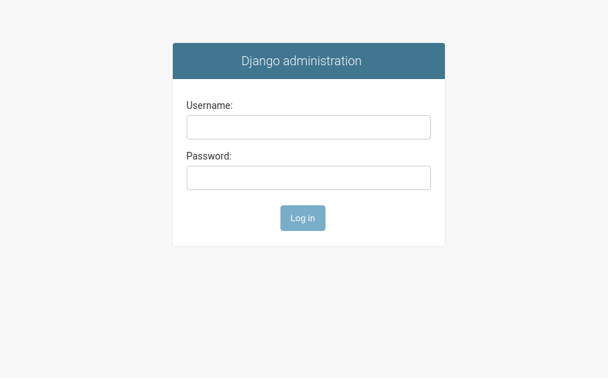

EOxServer Quickstart¶
EOxServer is a server for presenting big Earth Observation (EO) data archives and metadata via Open Standards. It builds upon an Open Source stack of software which includes Python, MapServer, Django/GeoDjango, GDAL, PROJ.4 and a SpatiaLite or PostGIS database.
This Quick Start describes how to:
- Use the Web Client to view, filter, subset, and download EO data
- Use the Admin Client to inspect EO data archives
Start EoxServer¶
Choose . This launches a browser showing the demonstration instance available at http://localhost/eoxserver/

Work with the Web Client¶
Click the Web Client link to open the integrated EOxServer client.
Within this client you can explore the contents of the EOxServer instance. The demonstration instance is filled with ENVISAT MERIS scenes.

The client provides a set of interactions. On the top you can see a menu bar to show the Layer Selection and the Tools widgets. The main area is the map widget of the client with a set of datasets already displayed. On the bottom, you’ll find the timeslider widget, that allows you to explore the contents in the temporal dimension.

The Layer Selection widget allows you to enable or disable the visibility and configure the rendering of the layers. Also, you can show or hide the streets-overlay and select the background layer. Please note, that when you disable the «MER FRS 1P RGB reduced» layer, the timeslider widget is hidden and only reappears once a layer dataset layer is enabled. The Tools widget provides three different tools: the Bounding Box Selection Tool, the Selection Management Tool and the Download Tool.

Similar to a map, you can zoom and pan the currently visible time of interest and select a time of interest by drawing on the area containing the red dots. You can also hover on a dot to see the dataset ID. By clicking on the dot, the map automatically zooms to the extent of the dataset.

When the Bounding Box Tool is enabled, you can draw a bounding box directly on the map. The bounding box is used for querying within the Download Tool.

When the Download Tool is enabled, a query to the server is sent. This query include s the selected time of interest and bounding box. The results are shown in the Download widget, where you can select the format, projection and datasets to download.
This was a quick introduction to the EOxServer Web Client. Please refer to the online documentation for more information on this topic.
Work with the Admin Client¶
From the EOxServer main page, click the Admin Client link and login with user admin and password admin.
{kind=link}
The Admin Client is Djangos standard admin and allows you to configure the available data. Please feel free to explore the client. More information can be found in the operators” guide.

For example, you can inspect the dataset series that is loaded by default by clicking the «Dataset Series» link and then the «MER_FRS_1P_RGB_reduced» link.

Here you can also see the included datasets. You can exclude single datasets using the «delete» checkbox on the right and click on «Save».

What Next?¶
This is a simple demonstration, but you can do much more with EOxServer. The project website contains a lot of resources to help you get started. Here’s a few resources to check out next:
- See the :doc:`EOxServer Overview <../overview/eoxserver_overview>`_ for more information.
- Read the EOxServer Operators” Guide.
- Read the complete EOxServer Users” documentation starting from the EOxServer Basics.
- If you are already in the OSGeoLive environment, read the local copy of the EOxServer Users” local documentation
- Ready to use EOxServer? Then join the community on the mailing lists to exchange ideas, discuss potential software improvements, and ask questions.